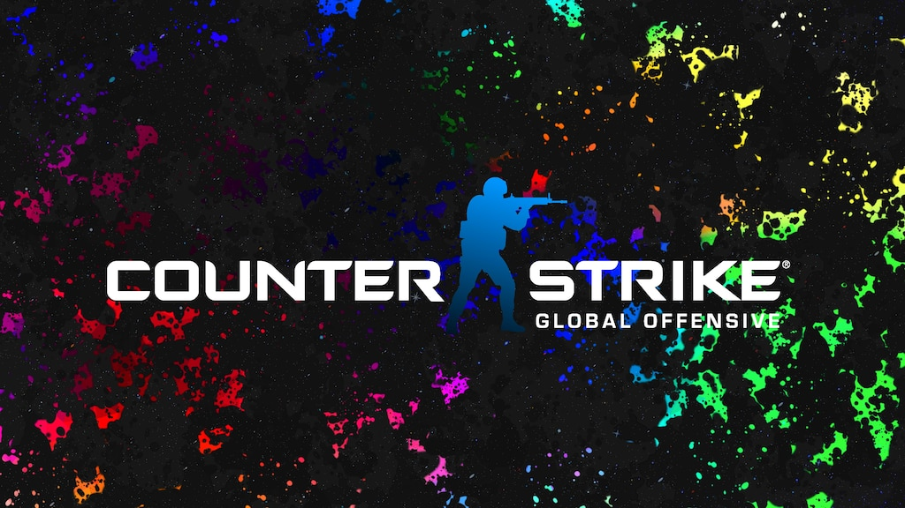

Basicamente o jogo é esse, se você busca algo dinâmico com muito tiro e ação esse certamente atenderá suas expectativas.
Um ponto negativo a se dizer é que o jogo exige um computador um pouco mais potente, caso você não queira ter problemas com travamentos é recomendado que seja seguido as especificações mínimas do jogo antes de iniciar.
Ressalto que esse jogo exige bastante dos sentidos como audição e visão, então um kit completo confortável com headset, teclado e mouse são dê suma importância.
Data de lançamento inicial: 21 de agosto de 2012